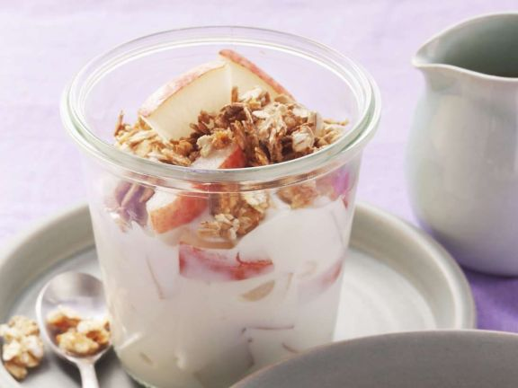

Muesli with quark and fruit

Description
On the one hand, the muesli with quark scores with valuable proteins, which are
important as building materials for the muscles. On the other hand, pears and oat
flakes provide plenty of fiber. These get your digestion going and keep you full
for a long time.
Ingredients
- 500g lowfat quark
- 150g yogurt (3.5% fat)
- 50ml milk (3.5% fat)
- 1 tbsp liquid honey
- 1 teaspoon lime juice
- 2 red-skinned pears
- 150g oatmeal
Preparation
- Mix the curd with yogurt, milk, honey and lime juice
- Wash the pears, quarter them, remove the core and cut into narrow slices
- Mix the pears with the oat flakes into the quark and serve filled into glasses
Nutritional value
1 Serving contains (proportion of the daily requirement in percent)
- Calories 310 kcal (15%)
- Protein 24 g (24%)
- Fat 5 g (4%)
- Carbohydrates 41 g (27%)
- Added sugar 3 g (12%)
- Fiber 5.7 g (19%)
Sources
Müsli mit Quark und Obst (original in geman)